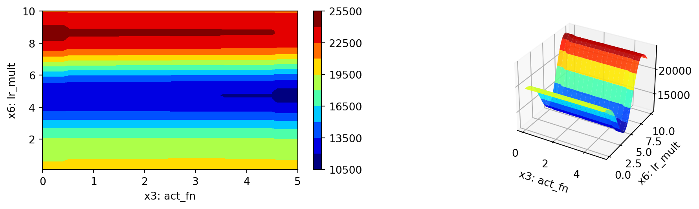
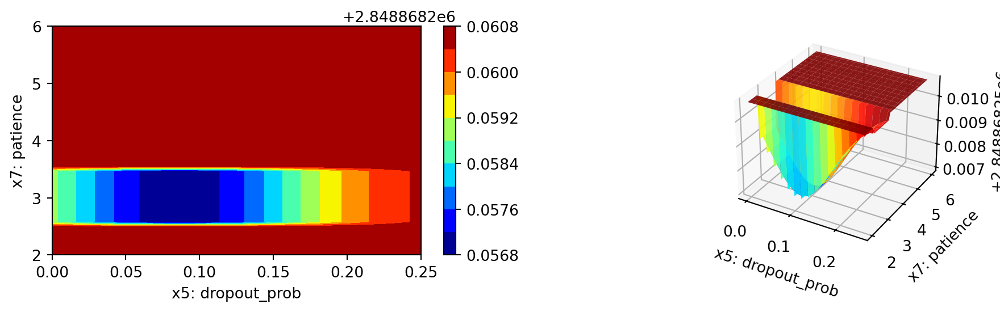
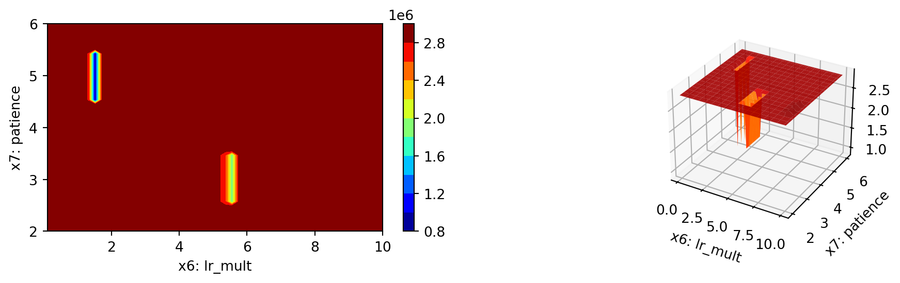

import sys
sys.path.insert(0, './userModel')
import my_regressor
import my_hyper_dict
from spotpython.hyperparameters.values import add_core_model_to_fun_control
from spotpython.data.diabetes import Diabetes
from spotpython.hyperdict.light_hyper_dict import LightHyperDict
from spotpython.fun.hyperlight import HyperLight
from spotpython.utils.init import (fun_control_init, design_control_init)
from spotpython.utils.eda import gen_design_table
from spotpython.hyperparameters.values import set_hyperparameter
from spotpython.spot import spot
fun_control = fun_control_init(
PREFIX="601-user-model",
fun_evals=inf,
max_time=1,
data_set = Diabetes(),
_L_in=10,
_L_out=1)
add_core_model_to_fun_control(fun_control=fun_control,
core_model=my_regressor.MyRegressor,
hyper_dict=my_hyper_dict.MyHyperDict)
design_control = design_control_init(init_size=7)
fun = HyperLight().fun
spot_tuner = spot.Spot(fun=fun,fun_control=fun_control, design_control=design_control)28 Hyperparameter Tuning with PyTorch Lightning and User Models
In this section, we will show how a user defined model can be used for the PyTorch Lightning hyperparameter tuning workflow with spotpython.
28.1 Using a User Specified Model
As templates, we provide the following three files that allow the user to specify a model in the /userModel directory:
my_regressor.py, see Section 28.2.4my_hyperdict.json, see Section 28.2.3my_hyperdict.py, see Section 28.2.3.
The my_regressor.py file contains the model class, which is a subclass of nn.Module. The my_hyperdict.json file contains the hyperparameter settings as a dictionary, which are loaded via the my_hyperdict.py file.
Note, that we have to add the path to the userModel directory to the sys.path list as shown below.
res = spot_tuner.run()
print(gen_design_table(fun_control=fun_control, spot=spot_tuner))
spot_tuner.plot_important_hyperparameter_contour(max_imp=3)train_model result: {'val_loss': nan, 'hp_metric': nan}train_model result: {'val_loss': 20826.865234375, 'hp_metric': 20826.865234375}train_model result: {'val_loss': 20234.77734375, 'hp_metric': 20234.77734375}train_model result: {'val_loss': nan, 'hp_metric': nan}train_model result: {'val_loss': 22259.34375, 'hp_metric': 22259.34375}train_model result: {'val_loss': 10134.15234375, 'hp_metric': 10134.15234375}train_model result: {'val_loss': 20497.48046875, 'hp_metric': 20497.48046875}
spotpython tuning: 10134.15234375 [##--------] 19.52% train_model result: {'val_loss': 23661.3515625, 'hp_metric': 23661.3515625}
spotpython tuning: 10134.15234375 [##--------] 23.91% train_model result: {'val_loss': 23658.6484375, 'hp_metric': 23658.6484375}
spotpython tuning: 10134.15234375 [###-------] 28.57% train_model result: {'val_loss': 23454.384765625, 'hp_metric': 23454.384765625}
spotpython tuning: 10134.15234375 [###-------] 33.30% train_model result: {'val_loss': 5184.44091796875, 'hp_metric': 5184.44091796875}
spotpython tuning: 5184.44091796875 [####------] 37.33% train_model result: {'val_loss': 20894.775390625, 'hp_metric': 20894.775390625}
spotpython tuning: 5184.44091796875 [##########] 100.00% Done...
| name | type | default | lower | upper | tuned | transform | importance | stars |
|----------------|--------|-----------|---------|---------|---------------------|-----------------------|--------------|---------|
| l1 | int | 3 | 3.0 | 8.0 | 7.0 | transform_power_2_int | 0.00 | |
| epochs | int | 4 | 4.0 | 9.0 | 6.0 | transform_power_2_int | 0.01 | |
| batch_size | int | 4 | 1.0 | 4.0 | 4.0 | transform_power_2_int | 0.08 | |
| act_fn | factor | ReLU | 0.0 | 5.0 | ReLU | None | 11.15 | * |
| optimizer | factor | SGD | 0.0 | 11.0 | SGD | None | 0.14 | . |
| dropout_prob | float | 0.01 | 0.0 | 0.25 | 0.13411744869042888 | None | 100.00 | *** |
| lr_mult | float | 1.0 | 0.1 | 10.0 | 9.323901586570559 | None | 100.00 | *** |
| patience | int | 2 | 2.0 | 6.0 | 3.0 | transform_power_2_int | 72.75 | ** |
| initialization | factor | Default | 0.0 | 2.0 | Kaiming | None | 0.08 | |
l1: 0.0010149718719347407
epochs: 0.008807444078823492
batch_size: 0.07540295938294846
act_fn: 11.148400404067656
optimizer: 0.1399555442836396
dropout_prob: 100.0
lr_mult: 100.0
patience: 72.75039340331256
initialization: 0.07531984470349068
impo: [['l1', 0.0010149718719347407], ['epochs', 0.008807444078823492], ['batch_size', 0.07540295938294846], ['act_fn', 11.148400404067656], ['optimizer', 0.1399555442836396], ['dropout_prob', 100.0], ['lr_mult', 100.0], ['patience', 72.75039340331256], ['initialization', 0.07531984470349068]]
indices: [5, 6, 7, 3, 4, 2, 8, 1, 0]
indices after max_imp selection: [5, 6, 7]


28.2 Details
28.2.1 Model Setup
By using core_model_name = "my_regressor.MyRegressor", the user specified model class MyRegressor [SOURCE] is selected. For this given core_model_name, the local hyper_dict is loaded using the my_hyper_dict.py file as shown below.
28.2.2 The my_hyper_dict.py File
The my_hyper_dict.py file must be placed in the /userModel directory. It provides a convenience function to load the hyperparameters from user specified the my_hyper_dict.json file, see Section 28.2.3. The user does not need to modify this file, if the JSON file is stored as my_hyper_dict.json. Alternative filenames can be specified via the filename argument (which is default set to "my_hyper_dict.json").
28.2.3 The my_hyper_dict.json File
The my_hyper_dict.json file contains the hyperparameter settings as a dictionary, which are loaded via the my_hyper_dict.py file. The example below shows the content of the my_hyper_dict.json file.
{
"MyRegressor": {
"l1": {
"type": "int",
"default": 3,
"transform": "transform_power_2_int",
"lower": 3,
"upper": 8
},
"epochs": {
"type": "int",
"default": 4,
"transform": "transform_power_2_int",
"lower": 4,
"upper": 9
},
"batch_size": {
"type": "int",
"default": 4,
"transform": "transform_power_2_int",
"lower": 1,
"upper": 4
},
"act_fn": {
"levels": [
"Sigmoid",
"Tanh",
"ReLU",
"LeakyReLU",
"ELU",
"Swish"
],
"type": "factor",
"default": "ReLU",
"transform": "None",
"class_name": "spotpython.torch.activation",
"core_model_parameter_type": "instance()",
"lower": 0,
"upper": 5
},
"optimizer": {
"levels": [
"Adadelta",
"Adagrad",
"Adam",
"AdamW",
"SparseAdam",
"Adamax",
"ASGD",
"NAdam",
"RAdam",
"RMSprop",
"Rprop",
"SGD"
],
"type": "factor",
"default": "SGD",
"transform": "None",
"class_name": "torch.optim",
"core_model_parameter_type": "str",
"lower": 0,
"upper": 11
},
"dropout_prob": {
"type": "float",
"default": 0.01,
"transform": "None",
"lower": 0.0,
"upper": 0.25
},
"lr_mult": {
"type": "float",
"default": 1.0,
"transform": "None",
"lower": 0.1,
"upper": 10.0
},
"patience": {
"type": "int",
"default": 2,
"transform": "transform_power_2_int",
"lower": 2,
"upper": 6
},
"initialization": {
"levels": [
"Default",
"Kaiming",
"Xavier"
],
"type": "factor",
"default": "Default",
"transform": "None",
"core_model_parameter_type": "str",
"lower": 0,
"upper": 2
}
}
}28.2.4 The my_regressor.py File
The my_regressor.py file contains [SOURCE] the model class, which is a subclass of nn.Module. It must implement the following methods:
__init__(self, **kwargs): The constructor of the model class. The hyperparameters are passed as keyword arguments.forward(self, x: torch.Tensor) -> torch.Tensor: The forward pass of the model. The inputxis passed through the model and the output is returned.training_step(self, batch, batch_idx) -> torch.Tensor: The training step of the model. It takes a batch of data and the batch index as input and returns the loss.validation_step(self, batch, batch_idx) -> torch.Tensor: The validation step of the model. It takes a batch of data and the batch index as input and returns the loss.test_step(self, batch, batch_idx) -> torch.Tensor: The test step of the model. It takes a batch of data and the batch index as input and returns the loss.predict(self, x: torch.Tensor) -> torch.Tensor: The prediction method of the model. It takes an inputxand returns the prediction.configure_optimizers(self) -> torch.optim.Optimizer: The method to configure the optimizer of the model. It returns the optimizer.
The file my_regressor.py must be placed in the /userModel directory. The user can modify the model class to implement a custom model architecture.
We will take a closer look at the my_regressor.py file in the next section.
28.2.4.1 The __init__ Method
__init__() initializes the MyRegressor object. It takes the following arguments:
l1(int): The number of neurons in the first hidden layer.epochs(int): The number of epochs to train the model for.batch_size(int): The batch size to use during training.initialization(str): The initialization method to use for the weights.act_fn(nn.Module): The activation function to use in the hidden layers.optimizer(str): The optimizer to use during training.dropout_prob(float): The probability of dropping out a neuron during training.lr_mult(float): The learning rate multiplier for the optimizer.patience(int): The number of epochs to wait before early stopping._L_in(int): The number of input features. Not a hyperparameter, but needed to create the network._L_out(int): The number of output classes. Not a hyperparameter, but needed to create the network._torchmetric(str): The metric to use for the loss function. IfNone, then “mean_squared_error” is used.
It is implemented as follows:
class MyRegressor(L.LightningModule):
def __init__(
self,
l1: int,
epochs: int,
batch_size: int,
initialization: str,
act_fn: nn.Module,
optimizer: str,
dropout_prob: float,
lr_mult: float,
patience: int,
_L_in: int,
_L_out: int,
_torchmetric: str,
):
super().__init__()
self._L_in = _L_in
self._L_out = _L_out
if _torchmetric is None:
_torchmetric = "mean_squared_error"
self._torchmetric = _torchmetric
self.metric = getattr(torchmetrics.functional.regression, _torchmetric)
# _L_in and _L_out are not hyperparameters, but are needed to create the network
# _torchmetric is not a hyperparameter, but is needed to calculate the loss
self.save_hyperparameters(ignore=["_L_in", "_L_out", "_torchmetric"])
# set dummy input array for Tensorboard Graphs
# set log_graph=True in Trainer to see the graph (in traintest.py)
self.example_input_array = torch.zeros((batch_size, self._L_in))
if self.hparams.l1 < 4:
raise ValueError("l1 must be at least 4")
hidden_sizes = self._get_hidden_sizes()
# Create the network based on the specified hidden sizes
layers = []
layer_sizes = [self._L_in] + hidden_sizes
layer_size_last = layer_sizes[0]
for layer_size in layer_sizes[1:]:
layers += [
nn.Linear(layer_size_last, layer_size),
self.hparams.act_fn,
nn.Dropout(self.hparams.dropout_prob),
]
layer_size_last = layer_size
layers += [nn.Linear(layer_sizes[-1], self._L_out)]
# nn.Sequential summarizes a list of modules into a single module,
# applying them in sequence
self.layers = nn.Sequential(*layers)28.2.4.3 The forward Method
The forward() method defines the forward pass of the model. It takes an input tensor x and passes it through the network layers to produce an output tensor. It is implemented as follows:
def forward(self, x: torch.Tensor) -> torch.Tensor:
return self.layers(x)28.2.4.4 The _calculate_loss Method
The _calculate_loss() method calculates the loss based on the predicted output and the target values. It uses the specified metric to calculate the loss. It takes the following arguments:
batch (tuple): A tuple containing a batch of input data and labels.
It is implemented as follows:
def _calculate_loss(self, batch):
x, y = batch
y = y.view(len(y), 1)
y_hat = self(x)
loss = self.metric(y_hat, y)
return loss28.2.4.5 The training_step Method
The training_step() method defines the training step of the model. It takes a batch of data and returns the loss. It is implemented as follows:
def training_step(self, batch: tuple) -> torch.Tensor:
val_loss = self._calculate_loss(batch)
return val_loss28.2.4.6 The validation_step Method
The validation_step() method defines the validation step of the model. It takes a batch of data and returns the loss. It is implemented as follows:
def validation_step(self, batch: tuple) -> torch.Tensor:
val_loss = self._calculate_loss(batch)
return val_loss28.2.4.7 The test_step Method
The test_step() method defines the test step of the model. It takes a batch of data and returns the loss. It is implemented as follows:
def test_step(self, batch: tuple) -> torch.Tensor:
val_loss = self._calculate_loss(batch)
return val_loss28.2.4.8 The predict Method
The predict() method defines the prediction method of the model. It takes an input tensor x and returns a tuple with the input tensor x, the target tensor y, and the predicted tensor y_hat.
It is implemented as follows:
def predict(self, x: torch.Tensor) -> torch.Tensor:
x, y = batch
yhat = self(x)
y = y.view(len(y), 1)
yhat = yhat.view(len(yhat), 1)
return (x, y, yhat)28.2.4.9 The configure_optimizers Method
The configure_optimizers() method defines the optimizer to use during training. It uses the optimizer_handler from spotpython.hyperparameter.optimizer to create the optimizer based on the specified optimizer name, parameters, and learning rate multiplier. It is implemented as follows:
def configure_optimizers(self) -> torch.optim.Optimizer:
optimizer = optimizer_handler(
optimizer_name=self.hparams.optimizer, params=self.parameters(), lr_mult=self.hparams.lr_mult
)
return optimizerNote, the default Lightning way is to define an optimizer as optimizer = torch.optim.Adam(self.parameters(), lr=self.learning_rate). spotpython uses an optimizer handler to create the optimizer, which adapts the learning rate according to the lr_mult hyperparameter as well as other hyperparameters. See spotpython.hyperparameters.optimizer.py [SOURCE] for details.